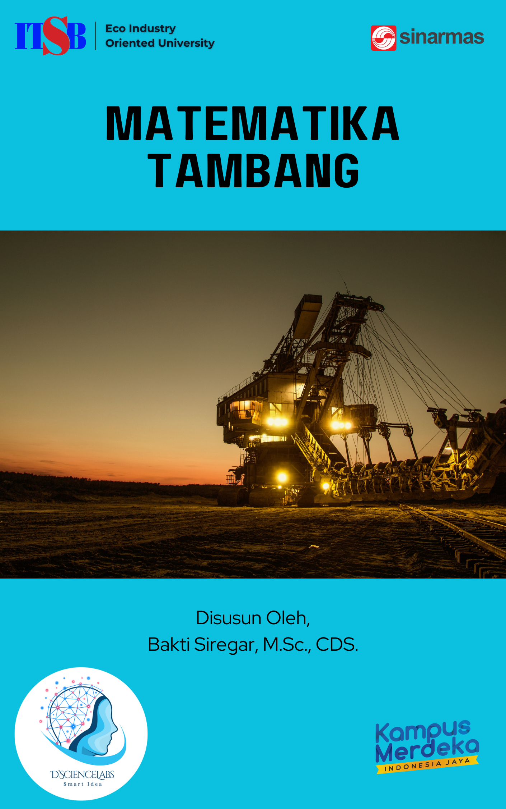

Matematika Teknik Pertambangan
2024-07-09
Kata Pengantar
Dengan mengucap syukur kepada Tuhan Yang Maha Esa, saya sangat senang dapat mempersembahkan eBook “Matematika Tambang” kepada para pembaca yang budiman. Buku ini merupakan hasil dari proses panjang, penelitian mendalam, serta dedikasi yang tiada henti. Harapan saya, eBook ini dapat memberikan manfaat yang signifikan bagi para pembaca, baik itu akademisi, praktisi, maupun masyarakat umum yang memiliki minat pada bidang ini.

Buku ini disusun dengan tujuan memberikan wawasan dan pengetahuan yang komprehensif mengenai konsep-konsep matematika yang relevan dan aplikatif dalam bidang pertambangan. Melalui buku ini, pembaca diharapkan dapat memahami konsep dasar kalkulus, aljabar linear, statistik, dan probabilitas yang diterapkan dalam pemodelan dan analisis data pertambangan.
Ringkasan Materi
Adapun isi pembelajaran dalam modul ini adalah sebagai berikut:
- Kalkulus
- Pengantar Matematika Tambang
- Bilangan Real
- Konsep Fungsi
- Konsep Limit Fungsi
- Konsep Turunan Fungsi
- Penggunaan Turunan
- Penggunaan Integral
- Konsep Fungsi Transenden
- Aljabar Linear
- Matriks
- Determinan
- Sistem Persamaan Linear
- Eigenvalue
- Eigenvector
- Aplikasi dalam Pertambangan
- Statistik
- Pengantar Statistik
- Distribusi Probabilitas
- Inferensi Statistik
- Uji Hipotesis
- Pemodelan Matematika
- Model Linear
- Model Nonlinear
- Simulasi Monte Carlo
- Penerapan SMC dalam Pertambangan
- Metode Iteratif
- Aplikasi MI dalam Pertambangan
- Analisis Data Tambang
- Teknik Analisis
- Pengolahan Data
- Optimisasi dalam Pertambangan
- Metode Optimisasi
- Studi Kasus
Penulis

- Bakti Siregar, M.Sc., CDS bekerja sebagai Dosen di Prodi Sains Data Institut Teknologi Sains Bandung. Beliau adalah meraih gelar Magister-nya dari Departemen Matematika Terapan (Applied Mathematics) National Sun Yat Sen University, Taiwan. Selain mengajar beliau juga pernah bekerja sebagai Data Scientist Freelance di perusahaan-perusahaan ternama seperti JNE, Samora Group, Pertamina, dan saat ini masih aktif sebagai Data Scientist Freelance di PT. Green City Traffic. Beliau memiliki antusiasme khusus dalam mengerjakan proyek (mengajar) Big Data Analytics, Machine Learning, Optimisasi, dan Analisis Time Series di bidang keuangan dan investasi. Keahlian utama yang dimilikinya adalah bahasa pemrograman Statistik seperti R Studio dan Python. Beliau juga sudah terbiasa dalam mengaplikasikan sistem basis data MySQL/NoSQL untuk manajemen data, serta mahir dalam menggunakan tools Big Data seperti Spark dan Hadoop. Beberapa project beliau dapat dilihat di link berikut: Rpubs, Github, Website, dan Kaggle.
Ucapan Terima Kasih
Proses penulisan eBook ini tidak terlepas dari dukungan berbagai pihak. Saya ingin mengucapkan terima kasih kepada:
- Keluarga yang selalu memberikan dukungan moral dan semangat tanpa henti.
- Rekan-rekan dan Kolaborator yang telah memberikan masukan, saran, dan kritik yang konstruktif.
- Institusi dan Organisasi, Khususnya ITSB yang telah menyediakan sumber daya dan fasilitas yang diperlukan selama proses penelitian dan penulisan.
Saya berharap eBook ini dapat menjadi referensi yang bermanfaat dan memberikan inspirasi serta pengetahuan baru bagi pembaca. Semoga Ebook ini dapat memenuhi ekspektasi dan kebutuhan para pembaca dan semoga ilmu yang disampaikan dapat bermanfaat bagi semua.
Masukan & Saran
Semua masukan dan tanggapan Anda sangat berarti bagi kami untuk memperbaiki Ebook Matematika Tambang ini kedepannya. Bagi para pembaca/pengguna yang ingin menyampaikan masukan dan tanggapan, dipersilahkan melalui kontak dibawah ini!
Email: dsciencelabs@outlook.com